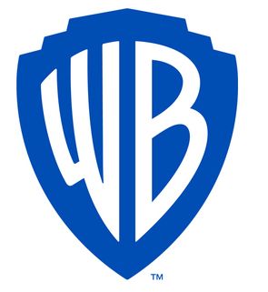

Introduction
Before looking into some of the partners/designers that make up Pentagram, it’s best to give a bit of background into how Pentagram actually started. Pentagram was founded in 1972 London and has since been the largest design consultancy in the world. It was set up by Alan Fletcher, Colin Forbes, Kenneth Grange, Mervyn Kurlansky and Theo Crosby. The man idea behind Pentagram was to create a studio where the main premise was collaboration, whether that’s with the designers themselves and or the clients. One of the founders, Theo Crosby, stated that he initially got the idea from working on an exhibition in the late 1950’s called ‘This is Tomorrow’.

Pentagram
"It was my first experience at a loose, horizontal organisation of equals. We have brought it ... to a kind of practical and efficient reality at Pentagram" (Theo Crosby, "The Painter as Designer", Edward Wright graphic work and painting, Arts Council, 1985, pp.49-50).
Before looking into some of the partners/designers that make up Pentagram, it’s best to give a bit of background into how Pentagram actually started. Pentagram was founded in 1972 London and has since been the largest design consultancy in the world. It was set up by Alan Fletcher, Colin Forbes, Kenneth Grange, Mervyn Kurlansky and Theo Crosby. The man idea behind Pentagram was to create a studio where the main premise was collaboration, whether that’s with the designers themselves and or the clients. One of the founders, Theo Crosby, stated that he initially got the idea from working on an exhibition in the late 1950’s called ‘This is Tomorrow’.
Pentagram's Work
Within this section, I’m going to look at some of the work that Pentagram has produced over the years, more specifically their redesigns of established companies and products, explaining why I think they’re significant as well as how they inspire my own design process.
Warner Brother's Studio
One of the most notable projects that Pentagram have worked on in recent years is the logo redesign for Warner Bros. Studios. In 2019, partner of Pentagram Emily Oberman and her team of designers sat down with not only staff and stakeholders but the creative partners of Warner Bros (i.e. writers, producers and actors) to discuss the logo redesign as well the meaning they wanted to capture. They were given a clear idea on what the new logo had to represent, ‘The Power of Story’, and then sat off on designing the logo. The new logo designed is very simplistic compared to previous renditions of the logo and works well to incorporate the message of Warner Bros Studios. Due to its simplistic nature, they have been able to incorporate it into many aspects of Warner Bros, for example branding, marketing for new movies/tv shows as well as the famous Warner Bros. Water Tower. With the redesign, Pentagram also created a new typeface to go along with the logo which has been used to accompany the logo in both marketing and promotional material. Personally, I really like what Pentagram has done with the redesigns as I love minimalistic design, due to the fact that it leaves a lot to be interpreted with each person.
Slack Logo Redesign
nother recent project Pentagram took on was the logo redesign for the cloud-based group project tool, Slack. Like I said, Slack is a creative community hub to help people communicate ideas as well with each other online on a group project. Before the overhaul of the design, Slack’s logo was criticised for being “wrong”, due to the fact that if the logo was placed on a background other than white, it would have looked terrible. This was due to the fact that it had a total of 11 different colours. This redesign took place in late 2018/early 2019 and was leas by Pentagram’s Michael Bierut and his team of designers. Michael and his team sat closely with the founder & CEO of Slack, Stewart Butterfield as well as the in-house design team to create a brand new and appealing logo. The team went through many iterations for the new logo design before returning to the original ‘#’ design that Slack had previously used. They improved greatly upon the design, yet they were still able to retain the ‘#’ like icon that was their previous logo. They also changed the colour pallet to red, green, blue and yellow so that it has a more modern feel to it. This also helps with the previous issue of not being able to use different background colours for the previous logo. Once again, the new logo Pentagram design is very minimalistic, so it appeals to me greatly as a lot the work I enjoy making is also very minimal with a vibrant/modern colour pallet. The Slack logo redesign is potentially my favourite piece Pentagram has worked on as I believe that they not only improved immensely on the initial design, but they were able to make it unique to Slack.
Partner's of Pentagram
Within this section, I am going to look at some of the partners of Pentagram that I feel have not only impacted the agency, but also the design world itself.
Paula Scher
"The best way to accomplish serious design ... is to be totally and completely unqualified for the job." ("Paula Scher." AZQuotes.com. Wind and Fly LTD, 2019. 21 November 2019. https://www.azquotes.com/author/40521-Paula_Scher)
The first partner that we are going to is arguably one of the most prominent postmodern graphic designers of all time, as well as one of my favourite Graphic Designers, Paula Scher. Paula’s career initially started, all the way back in 1970 when she went to the Tyler School of Art, Elkins Park, Pennsylvania and completed a Bachelor of Fine Arts. Her electric approach to typography helped her to become an Art Director in New York, due to the fact that it was so unique during the early 1980’s and during 1991, Paula became the first ever female partner of Pentagram. During her time within Pentagram, she has been able to work with many high-end brand names, such as Coca-Cola, Microsoft and Shake Shack (just to name a few), creating many different designs for branding, promotional material and even environmental graphics. In more recent years, Paula has been working very closely with The Public Theatre, The New York Times, as well as GQ magazine, frequently contributing to the design aspects of these publications. As her work is so popular, she has been able to showcase her work in many different museums and exhibitions all around the world. For example, the Victoria and Albert Museum in London, the Bibliothèque Nationale de France in Paris as well as Museum für Gestaltung in Zürich, just to name a few. You can also find a list of all of her exhibitions here. Throughout her time at Pentagram, she has won many awards for her designs and contribution to the Graphic Design World. Most notably, her famous piece for ‘The Public Theatre’, released in 1996 was able to win her the Coveted Beacon Award for Integrated Corporate Design Strategy. All in all, Paula Scher’s time within Pentagram has been very successful, helping her to reach new heights within the Graphic Design industry as well as gaining her awards for her contribution.